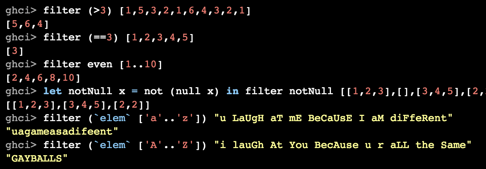

name: inverse layout: true class: center, middle, inverse --- layout:false # Test Slide (H1) <hr> <img align="right" src="testpattern.gif" width="500px"> ## H2 ### H3 Faces: <font face="DejaVu Sans">😈</font><font face="DejaVu Sans">😇</font> #### H4 Text > Quoted <hr> --- --- # Goals ### This talk should make you feel _uncomfortable_.<br> ### This talk is not intended to make anyone feel _unsafe_.<br> (Please follow up with organizers, per CoC.) --- # Definitions ## comfortable Environment is within tolerable parameters. -- ## safe Not in danger; free from harm's reach. --- # Deceptive Similarity -- ## When you feel comfortable... No action is necessary -- ## When you feel safe... No action is necessary --- # Critical Distinction -- ## When you feel **un**-comfortable Corrective action is possible <br> Ignoring discomfort is an option -- ## When you feel **un**-safe... Immediate corrective action is necessary <br> Fight/flight response; very **draining** --- # Motivating Example <img align="right" src="Container-Desk-1.png"> ## Workplace setup is a matter of comfort --- # Motivating Example <img align="right" src="Container-Desk-2.png"> ## Workplace setup is a matter of comfort ## ... until it's a matter of safety. --- class: center, middle # <span style="font-size: 96px;">Use Your Superpower<br>To Be a<br>10× Developer</span> ### @sammikes --- # 10× Developer <img style="padding-left: 10px;" align="right" src="man-month-cover.jpg" width="25%"> The Mythical Man-Month: <div style="padding-left: 22pt;" width="73%"> ...a group of experienced programmers. Within just this group the ratios between best and worst performances averaged about 10:1 on productivity measurements and an amazing 5:1 on program speed and space measurements! </div> --- # 10× Developer <img style="padding-left: 10px;" align="right" src="man-month-cover.jpg" width="25%"> The Mythical Man-Month: <div width="73%" style="padding-left: 22pt;" > ...a group of experienced programmers. Within just this group the ratios between **best** and **worst** performances averaged about 10:1 on **productivity** measurements and an amazing 5:1 on program **speed** and **space** measurements! </div> -- ## Interpretation * “developer output varies by **project** and **individual** and **metric**” * not “some developers are 10× better than average” --- # Our brains have bugs ## Benham Disk <img align="right" width="400px" src="./disc.png"> --- # Our brains have bugs ## Benham Disk (Spinning) <img align="right" width="400px" src="./disc-spinning.gif"> --- # Our brains have bugs ## Benham Disk (Done) <img align="right" width="400px" src="./disc.png"> --- # Another Kind of Bug <img align="right" src="merge-arrow.jpg"> ## What do you think about the people in this car? -- ### bad people ? -- ### bad situation ? -- ## Does it depend on which car you're in? --- # Fundamental Attribution Error ## We tend to believe -- ### <font face="DejaVu Sans">😈</font> others' bad actions are caused by their bad character -- ### <font face="DejaVu Sans">😇</font> our good character ensures we don't do bad actions -- ### <font face="DejaVu Sans">😇</font> any bad actions are caused by our environment -- ## In general we **underestimate** environmental factors --- # 10× ## Instead of looking for 10× **developers** ## We should be looking at **environments** --- # 10× ## It's hard to identify causes for **10×** environments -- ## We should look for **0.1×** environments -- ## and **DESTROY** them --- # A Productivity-Destroying Environment <img align="right" src="Container-Desk-2.png"> ## How can we identify psychological factors that damage productivity? --- template: inverse # What if I Told You <img src="morpheus2.png" width="100%"> # They're All Around You --- # Your Super Power ## What if your super power was an *inability* to see factors that contribute to 0.1x environments? -- ## We call that super power “privilege”. <img src="morpheus-smile.gif"> --- # A Productivity-Destroying Environment <img align="right" src="Container-Desk-2.png"> -- ## Three kinds of events * whole tank is overflowed in one transaction -- * fluid is added at < max outflow -- * fluid is added at > max outflow -- ## Little Things Add Up --- # Microaggressions > social exchanges in which a person says or does something (possibly accidentally or without intended malice) that belittles and alienates a member of a marginalized group. -- ## Pouring sewage into a person's tank faster than they can pump it out. --- # Examples of Microaggressions ### Man (to a woman): > You should get a tattoo or something to prove you're nerdy enough to be here. -- ### Message: You don't belong here, you need to prove yourself. --- # Examples of Microaggressions ### Speaker 1: > We need to get a motherly person at [location] to take care of us. ### Speaker 2: > They're all too busy working out and looking pretty -- ### Message: Women should do domestic work and be ornamental -- they are not engineers or project contributors. --- # Examples of Microaggressions Here's an excerpt from "learn you a haskell for great good"  -- ### Message: 'Balls' are intrinsically funny, especially 'gay' ones. Why are we even talking about balls, in a programming language learning resource? --- # What About Intent <img align="center" src="intent-tweet.png" width="500"> -- ### That's an unrealistic aspiration > Intent matters, but only after the fact, to distinguish between misunderstanding and threat --- # Personal Anecdote ??? in high school I was hanging out with my literary friends. We used sarcasm. We knew all the tricks, dramatic irony, metaphor, bathos, puns, parody, litotes and satire. A woman that I didn't know very well said something to me, sort of a backhanded compliment I responded with (what I intended to be) a sarcastic, self-deprecating reference to a character from a story ... and she ran out of the room crying. --- # I know **I** don't do things like that -- ## Because nobody ever calls me on them -- ## Possible causes: -- #### I'm not dumping any sewage? > my buggy brain wants me to believe this <br> > (Fundamental Attribution Error)<br> > it's probably not true -- #### People are trying to call me on it, but I'm ignoring them. -- #### People are choosing not to call me on it because they don't want <br>to deal with me. -- > can I rule these out? --- <img align="center" src="vuln-tweet.png" width="750"> ??? So at JSFest Jenn threw down this challenge. I'm not going to talk about impostor syndrome, I don't know enough about it. (I am a world's expert on Dunning-Kreuger, though.) [laugh line] It's pretty hard for someone like me to make myself vulnerable. I am a straight, white, heterosexual, cis-gendered, well-off, male US citizen who is not too young and not too old. But I'll give it a shot. --- # Community ## A group of people who have _sacred values_ in common. > We identify sacred values and circle around them. Jonathan Haidt, "The Righteous Mind" (2012 book) --- # Javascript Community Values ## Be Kind ## Help People ## Care --- # Personal Anecdote --- # How to be a 10× Developer ### Do 10× times as much work (increase by ~1000%) <img src="1-10x.png" > --- # Motivational Quote ## There's no limit to the amount of good you can accomplish if you don't care who gets the credit. -- ## — anonymous --- # How to be a 10× Developer ### Help 10 people each double their output (increase by 100%) <img src="10-10x.png" style="margin-bottom: -40px;"> -- ### Help 100 people each increase their output (increase by 10%) -- ### Help 1000 people each increase their output (increase by 1%) --- # First Steps ## Get a Buddy > someone who will call you out if you overstep -- ## Pre-Commit To Positive Behaviors > decide how you'll react when called out > decide how you'll react to pushback --- # Use Your Privilege -- ## Shut Down Microaggressions > as a privileged person, you are less vulnerable to pushback -- ### No Cookies > reward is internal -- ### No Certainty --- # Guaranteed Mistakes -- ## Nobody Thinks They're a Jerk -- ## In speaking out, you will make mistakes > But saying nothing is a different kind of mistake -- ## You may have to make yourself un-**comfortable** > In order to help someone feel **safe** ??? Sometimes people feel like they can't or shouldn't contribute or respond because they might say the wrong thing. That's a good worry, and it probably will happen that you say the wrong thing. But consider that saying nothing is probably also a wrong thing. --- # Responding to microaggressions ### -We need to get a motherly person at [location] to take care of us. ### -They're all too busy working out and looking pretty -- ### I responded > Maybe you need a fatherly person instead. My kids say I make pretty good pancakes, how about if I come around tomorrow morning? --- # Responding to microaggressions ### You should get a tattoo or something to prove you're nerdy enough to be here. -- ### I responded > She doesn't need to do or have anything to prove she belongs here. Being here is proof enough. --- # Thank You <img src="Container-Nearly-Empty.png" align="right"> ## May your tank be empty, and your pumps be strong. # ## Contact: @sammikes, smikes , cubane.com